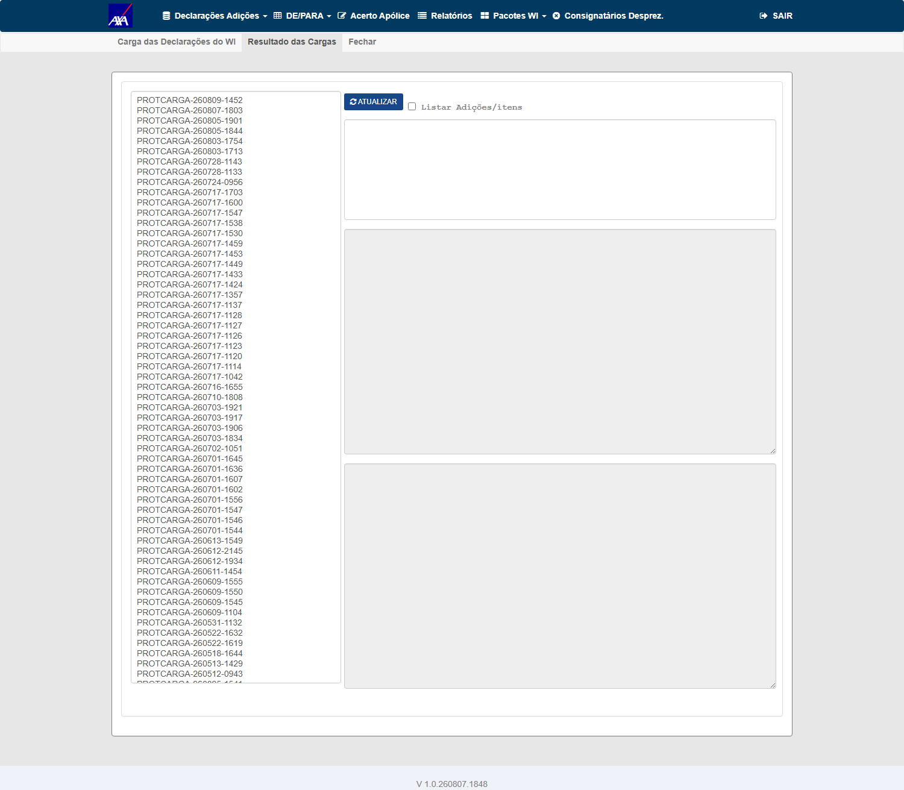
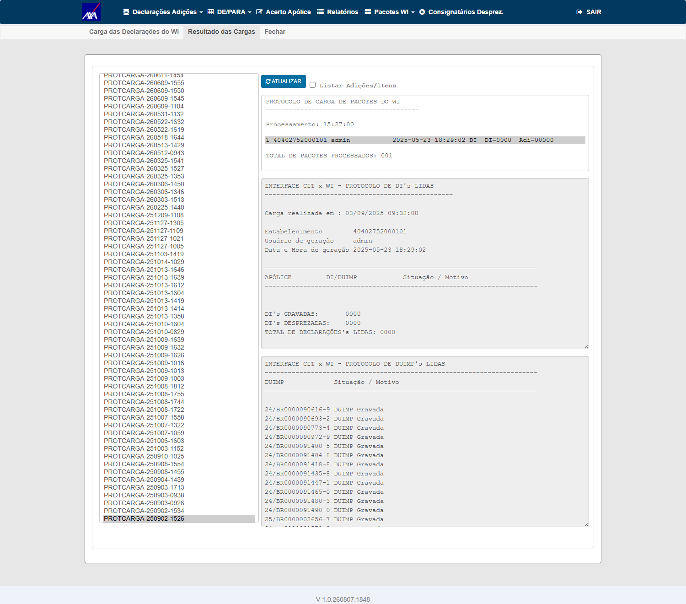
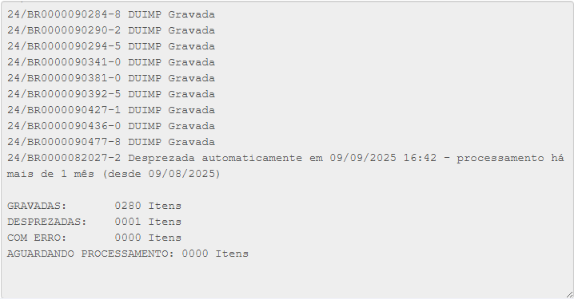
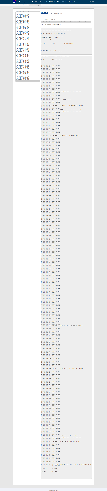
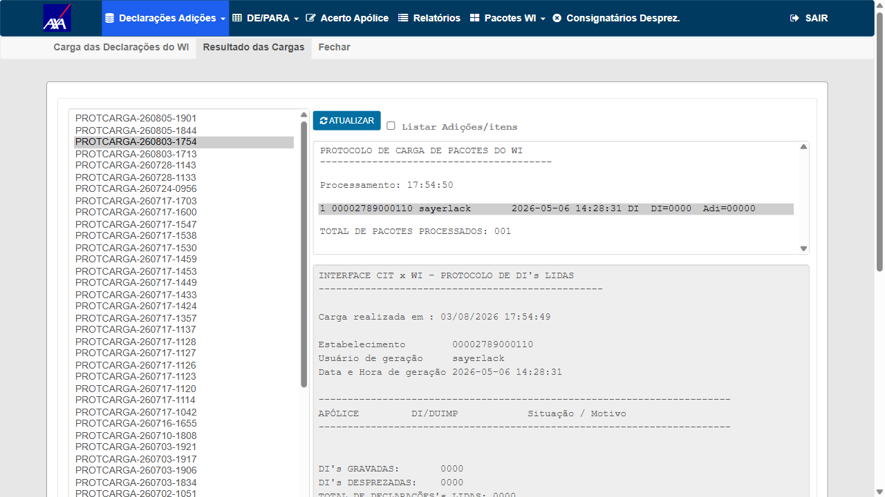
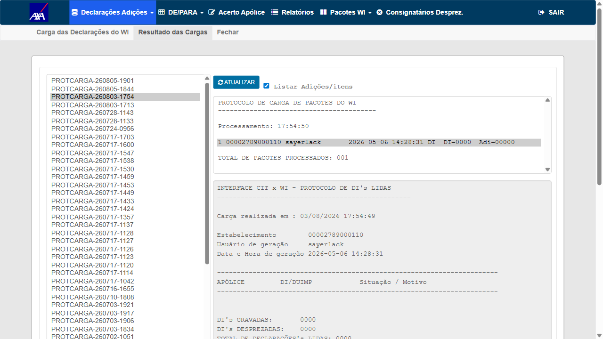
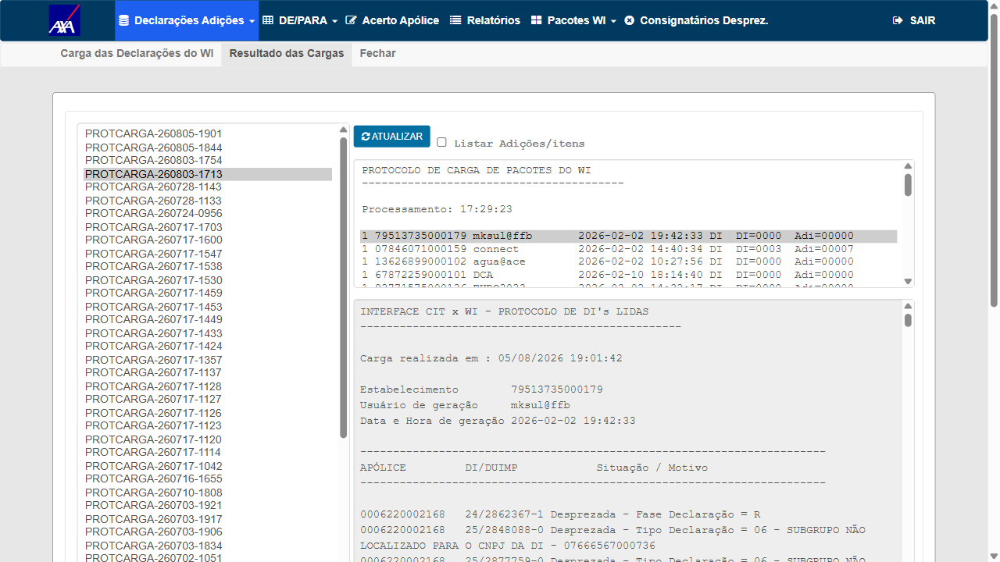
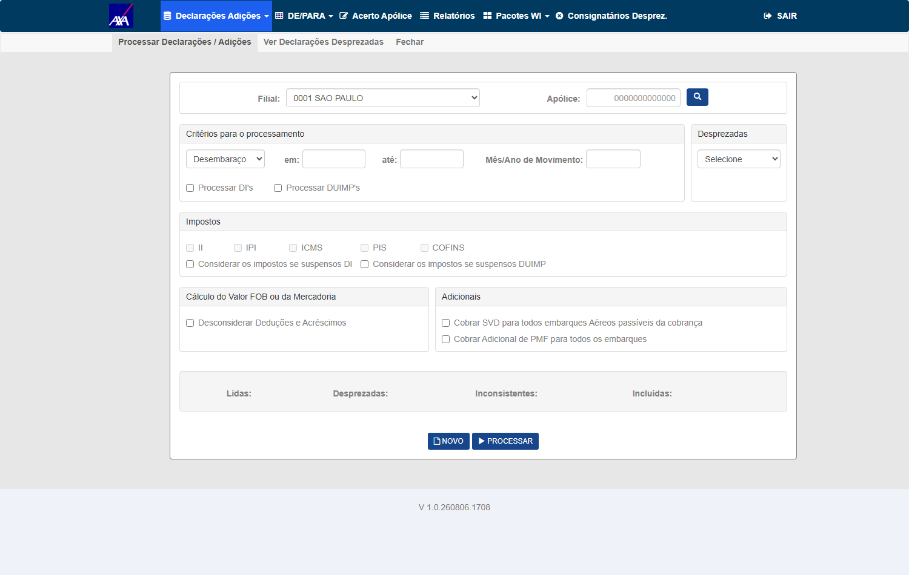

Na consulta de protocolo de carga, os contadores textuais (ex.: "X DUIMP's GRAVADAS / DESPREZADAS / COM ERRO / AGUARDANDO") devem deixar explícita a unidade — se X se refere a linhas ou a itens — para que a leitura não gere ambiguidade sobre quantos itens foram efetivamente processados.
CA (texto original do card): (1) os contadores seguem a mesma regra de contagem definida na PBI 1 (itens, não linhas — ver #7803) — ⚠️ este trecho foi superado em 05/08: a Fabiola definiu que o registro segue o nível de agrupamento, e a medição do #7803 confirma que o contador conta declarações (47) e não itens (555). Ver a caixa verde abaixo; (2) o texto do protocolo deixa clara a unidade de contagem (ex.: "X itens" em vez de "X DUIMP's" quando aplicável).
Backend: DIProcessamentoController.ListaArquivoConteudoProtocolo() / DICargaController.ListaConteudoProtocoloDuimp().
Card em New (dev ainda não iniciou; sem AssignedTo). Plano gerado como início do DoR (Gate 1 pendente). A execução aguarda:
Ind_DuimpAgrupamentoAverbacao está ON
em AXA HML e o Worker está rodando (agregação medida em 05/08 18:44→19:07). O Grupo B deixou de
ser diferido — CT-PRT-002 e CT-PRT-003 foram executados e aprovados em 06/08. A inversão é do Grupo A: o
CT-PRT-001 (flag OFF) é que ficou sem prova visual, porque desligar a flag em HML afetaria o #7803 no mesmo ambiente
compartilhado.Este plano foi escrito em 17/07 sobre o critério de aceite do card, que dizia
"contadores seguem a regra da PBI 1 — contam itens (soma de q_itn_agp)".
Em 05/08 11:49 levantei que isso contradizia a decisão de 24/07 no #7803 ("números = averbações, não itens do
agrupamento"). A Fabiola respondeu às 17:44:
"o registro exibido na tela Resultado das Cargas deve ser de acordo com o nível de agrupamento"
Isso reconcilia os dois cards: não é "sempre itens" nem "sempre averbações" — o número
segue o nível em que a linha foi agregada. Como a base de HML é 100% nível
'D' (declaração), na prática o contador exibe declarações.
E isto não é só interpretação de uma frase — está medido. Ao executar o CT-CTD-003 do #7803 hoje, com uma declaração agregada de 108 itens preparada de propósito:
Lidas 47 · Desprezadas 39 · Inconsistentes 8 · Incluídas 0
39 + 8 = 47 = nº de DECLARAÇÕES do período (a soma de itens seria 555)
a declaração de 108 itens somou 1, não 108Consequência para este plano: o resultado esperado do
CT-PRT-002 e do CT-PRT-004 estava invertido — eles exigiam a soma de
q_itn_agp, que é justamente o que o sistema não faz e o que a regra de negócio não
pede. Corrigidos abaixo. Sem essa correção, os dois CTs reprovariam uma implementação correta.
Regressão — com a flag OFF (sem agregação), 1 linha = 1 item; o protocolo deve exibir os contadores corretos e a unidade clara, sem regressão de leitura.
AgrupamentoAverbacaoHabilitado OFFEu havia registrado que este CT exigia desligar a flag Ind_DuimpAgrupamentoAverbacao, o que contaminaria o #7803 e o ambiente compartilhado. A premissa estava errada. A pré-condição escrita é "protocolo de uma carga já processada SEM agregação" — não exige a flag desligada agora, exige um protocolo gerado quando não havia agregação. Executado sem tocar na flag.
⚠️ Data de protocolo não serve de critério: o PROTCARGA-260717-1600 é de 17/07, anterior à ativação da flag (24/07 17:54), e ainda assim tem 4 linhas agregadas — a agregação é feita pelo Worker depois da carga. O critério correto é d_agp IS NULL.
Alvo: PROTCARGA-250902-1526 — 281 declarações, zero agregadas.
GRAVADAS: 0280 Itens DESPREZADAS: 0001 Itens COM ERRO: 0000 Itens AGUARDANDO PROCESSAMENTO: 0000 Itens
| Conferência | Tela | Banco |
|---|---|---|
| Total de declarações | 281 | 281 ✓ |
GRAVADAS (sts_prc='C') | 280 | 280 ✓ |
DESPREZADAS (sts_prc='D') | 1 | 1 ✓ |
| Unidade exibida | Itens | sem agregação → 1 linha = 1 item ✓ |
Por que APROVADO. O CA pede contagem pela regra de agrupamento e unidade clara no texto. Os dois estão entregues: sem agregação a tela imprime "Itens"; na agregada imprime "DUIMPs" (CT-PRT-002). O rótulo é dinâmico e correto nos dois modos, e os números batem com o banco pelo critério do próprio sistema.
⚠️ Observação — não é defeito deste card. As 280 "GRAVADAS" incluem 15 declarações cuja mensagem diz o contrário: 13 começam com "Desprezada — …" (Incoterm ausente, data de desembaraço inválida, data de saída inválida, erro ao obter dados) e 1 diz "Erro ao processar DUIMP pendente" — todas gravadas com sts_prc='C'. A tela conta por status e está fiel ao dado; quem gravou status e mensagem em desacordo foi a ingestão de setembro/2025, muito antes desta entrega. Fica registrado sem abrir defeito contra o #7804.


PROTCARGA-250902-1526 carregado: DI's LIDAS zeradas e DUIMP's listadas uma a uma
GRAVADAS: 0280 Itens · DESPREZADAS: 0001 Itens · COM ERRO: 0000 Itens · AGUARDANDO PROCESSAMENTO: 0000 Itens. Capturado rolando o scroll interno do #textareaDuimp até o fim, no tamanho natural do painel
scrollHeight, mostrando a lista das 281 declarações e o rodapé no mesmo printsts_prc e por t_sts_prc, lado a lado.
Números conferíveis sem depender de leitura de imagem.O arquivo 03_conteudo_completo.png, publicado em 09/08, era cópia byte a byte do EV2 (md5 1ccd7ee1a9bd175a8f5d4e21967a10fd nos dois) com a legenda "rodapé com GRAVADAS 0280 Itens" — número que não aparecia em imagem nenhuma. Apontado pelo Wesley: "você aprovou com a evidência mostrando erro, os contadores estão zerados".
Causa raiz: o rodapé vive no fim de um <textarea> com scroll interno, e screenshot(full_page=True) não expande scroll interno — o print cortava na 15ª de 281 linhas. O valor 0280 vinha do stdout do script, que não persistia nada.
E um segundo erro, no próprio conserto: a primeira tentativa capturou locator("textarea").first, que é o painel de DI's — zerado neste protocolo (DI's GRAVADAS: 0000). Ou seja, ia republicar contadores zerados como se fossem os das DUIMPs, repetindo o defeito apontado. O alvo correto é #textareaDuimp, escolhido agora pelo painel com mais conteúdo.
Resposta à pergunta do Wesley ("faltou a evidência ou está com erro?"): faltava a evidência. Os contadores estavam certos desde 09/08 — o que não existia era imagem que os mostrasse.
Lendo DICargaController.ContarDeclaracoes() em origin/hml, existem dois caminhos que devolvem 1 com nivel=null — e portanto produzem saída idêntica na tela:
if (!agrupamentoHabilitado) { nivel = null; return 1; } — a flag desligada;tb_itf_smx_dcl_pnd_dui → linhas.Count == 0 → nivel = null; return 1;Medido em 10/08 no protocolo usado: 281 DUIMPs distintas, zero com linha em tb_itf_smx_dcl_pnd_dui (a tabela hoje só tem 678 linhas, todas ingeridas a partir de 31/07/2026 — as declarações de setembro/2025 não estão lá). Portanto o ramo executado foi o (2), não o (1). Evidência: ramo_contardeclaracoes_10-08.txt.
O que isso muda: o CT continua APROVADO — a pré-condição escrita é "protocolo de uma carga já processada sem agregação", e é exatamente esse o cenário exercitado; o CA (contador coerente + unidade explícita) está provado com números batendo o banco. O que eu não posso afirmar é ter exercitado a flag desligada: os dois ramos convergem para o mesmo retorno por leitura de código, não por execução. Por isso o título mudou de "Flag OFF" para "Sem agregação".
Risco latente anotado, sem defeito neste ciclo: ObterRotuloNivel() tem default: return "Itens". Com nivel=null o rótulo "Itens" está semanticamente certo (1 linha = 1 item), mas é um default, não um mapeamento explícito — qualquer nível futuro não mapeado exibiria "Itens" silenciosamente, mesmo contando declarações. Não afeta os cenários testados.
V 1.0.260806.1708.Ind_DuimpAgrupamentoAverbacao está ON em AXA HML, e
desligá-la para provar o cenário OFF afetaria também o #7803 e os demais usuários do ambiente
compartilhado. O dev cobriu o caminho OFF por teste unitário (2 casos novos, 10/10 no total,
commit 6a3affc16) e registrou a mesma ressalva em 15:01. Para fechar com prova visual seria preciso
ambiente isolado ou decisão explícita de desligar a flag temporariamente — é decisão de ambiente, não de
QA, e por isso o CT não é declarado aprovado nem reprovado.
#7837 em In Progress (card alterado em 06/08 18:04, marcador
#QA-EXEC-PRONTO com 5 CTs aprovados). Ou seja, a flag Ind_DuimpAgrupamentoAverbacao está
sendo exercitada por uma validação em curso — desligá-la agora, mesmo por poucos minutos,
contaminaria o card do lado. A diretriz de liberdade total em HML cobre massa (criar segurado, apólice,
averbação, cancelar emissão); uma feature flag compartilhada é diferente: ela muda o comportamento do
sistema para todos os usuários do ambiente ao mesmo tempo, inclusive para quem está homologando outro card.
Reavalio a cada ciclo — assim que o #7803 fechar, este CT deixa de ter impedimento e roda com toggle e
restauração imediata.Regra corrigida em 05/08 (Fabiola, 17:44): o registro exibido segue o nível de agrupamento da linha — não a soma de q_itn_agp. Como a base de HML é 100% nível 'D', o contador exibe declarações. É a mesma regra do #7803, agora medida (47 declarações × 555 itens).
V 1.0.260806.1708 ·
protocolo PROTCARGA-260803-1754
Texto literal exibido, idêntico nos dois modos (por linha e Listar Adições/itens):
GRAVADAS: 0086 DUIMPs
DESPREZADAS: 0003 Itens
COM ERRO: 0000 Itens
AGUARDANDO PROCESSAMENTO: 0000 ItensOráculo em smt-hom-citweb-axa — as duas grandezas, que é o que discrimina a regra:
tb_itf_smx_ctl_prc_dui (protocolo)
sts='C' "DUIMP Gravada" ....... 86 linhas = 86 declaracoes distintas
sts='D' "Desprezada" ........... 3 linhas
tb_itf_smx_dcl_pnd_dui (agrupamento), para as 86 gravadas
c_nvl_avb='D' .................. 64 linhas, SUM(q_itn_agp) = 304A tela exibe 86 — o nº de declarações — e não 304, que
seria a soma de itens. O comportamento antigo exibiria 304, então a distância entre os dois números é o que
torna o CT conclusivo. Confere também pelo fechamento: 86 + 3 = 89 = total de linhas do protocolo.
⚠️ Nuance registrada, não presumida: das 86 gravadas, 64 têm linha de agregação e 22 não — e todas as 86 são contadas. É coerente com a regra (uma DUIMP não agregada continua sendo 1 DUIMP = 1 declaração), mas é escolha de implementação e fica escrita.
testes-automatizados/voidr-rcv/specs/pbi-7804/ct_prt_protocolo.spec.js
— navega Interface WI / Siscomex → Declarações Adições → Carga → aba Resultado das
Cargas, escolhe o protocolo, alterna os dois modos e salva o texto literal dos painéis.
Este caminho não existia em features/ nem em script antes de 06/08.
evidencias/CT-PRT-002-003/ do próprio plano, mas não estavam referenciadas no HTML — o CT ficou verde sem mostrar a prova. Falha de publicação minha, não de execução.
modo por linha, protocoloPROTC" onclick="openLb('evidencias/CT-PRT-002-003/ev_CT-PRT-002-003_01_modo-por-linha_PROTCARGA-260803-1754_APROVADO_20260806-181559.png')">EV1 — modo por linha, protocolo PROTCARGA-260803-1754: os contadores do rodapé seguem o nível de agrupamento (1 linha = 1 registro)
modo listar adições/itens, mesmo prot" onclick="openLb('evidencias/CT-PRT-002-003/ev_CT-PRT-002-003_02_modo-listar-adicoes-itens_PROTCARGA-260803-1754_APROVADO_20260806-181604.png')">
PROTCARGA-260803-1713" onclick="openLb('evidencias/CT-PRT-002-003/ev_CT-PRT-002-003_01_modo-por-linha_PROTCARGA-260803-1713_FALLBACK_20260806-180938.png')">PROTCARGA-260803-1713, que caiu em fallback. Serve para mostrar que os contadores mudam com o modo e não são um número fixo na telaAjustado em 05/08 18:04, a pedido da Fabiola: "Deve descrever o registro pelo nível de agrupamento — ex.: 1 DUIMPs ou 10 Adições". O texto do protocolo não pode dizer genericamente "X itens": precisa nomear a unidade correspondente ao nível em que a linha foi agregada.
É a mesma regra do CT-PRT-002 aplicada à redação em vez de ao número: o CT-002 verifica quanto o protocolo conta; este verifica como ele nomeia o que contou.
c_nvl_avb da linha correspondente no banco'D' → "1 DUIMP" / "N DUIMPs"'A' → "10 Adições"'I' → "N Itens"'D' é REPROVADO — é exatamente a
ambiguidade que este CA existe para eliminar.
pbi-7682/ct_dvm_001_003_agrupamento_duimp.py e
reconfirmado em 06/08: 'A' = 0 e 'I' = 0 em TODAS as bases, porque o
Worker consolida sempre na DUIMP inteira. Wesley confirmou em 06/08 que o Worker rodou normalmente
na véspera (medido: d_agp em 05/08 18:44→19:07), então não há backlog a drenar — o cenário de
nível 'A'/'I' não existe no produto. Fabricar essas linhas por SQL seria manufaturar a própria saída sob
teste. O CT é executável e conclusivo apenas para o nível 'D', e é assim que deve ser lido.'D' — 06/08/2026 18:15 · AXA HML ·
V 1.0.260806.1708 · protocolo PROTCARGA-260803-1754
O rótulo é dinâmico por status e acompanha a agregação da linha:
GRAVADAS: 0086 DUIMPs <-- agregadas (c_nvl_avb='D') -> nomeia o nivel
DESPREZADAS: 0003 Itens <-- sem agregacao -> "Itens" e o correto (nao ha nivel a nomear)O "X itens" genérico que este CA existe para eliminar não ocorre nas linhas
agregadas. A evidência deste CT é a redação, e o texto literal dos painéis está salvo em
evidencias/CT-PRT-002-003/texto_*.txt.
⚠️ Duas correções de critério de massa — ambas mudam a leitura de evidência e por isso ficam registradas:
PROTCARGA-260803-1713 tem 800 linhas nível 'D' no protocolo
inteiro, mas o arquivo de conteúdo dele exibe GRAVADAS 0000 / DESPREZADAS 0060, e
medi que as 60 desprezadas têm ZERO linha de agregação — ali o contador cai no fallback
t_json_wi e "Itens" é o rótulo correto. É o protocolo das evidências do dev de
15:57: não é defeito, mas também não fecha este CT.PROTCARGA-260730-1652 (onde o dev mediu "0045 DUIMPs" às 12:12) tem 56 linhas nível
'D' no banco e não está nas 141 opções da tela em HML — aquela medição foi em
ambiente local. Conferir se o protocolo aparece na tela do tenant, não só no banco.evidencias/CT-PRT-002-003/ do próprio plano, mas não estavam referenciadas no HTML — o CT ficou verde sem mostrar a prova. Falha de publicação minha, não de execução.PROTCARGA-260803-1754)| Fonte lida | O que exige, ao pé da letra |
|---|---|
| CA do card, linha 1 | “Contadores seguem a mesma regra de contagem definida na PBI 1 (precisa considerar a quantidade por agrupamento)” |
| CA do card, linha 2 | “Texto do protocolo deixa claro a unidade de contagem (ex.: ‘X itens’ em vez de ‘X DUIMP’s’ quando aplicável)” |
| Fabiola (PO), comentário 3401169 — 05/08 21:04 | “ajustar o CT-PRT-003 — deve descrever o registro pelo nível de agrupamento ex: 1- Duimps ou 10 Adições, após a correção está aprovado” |
| Fabiola (PO), comentário 3401138 — 05/08 20:44 | “o registro exibido na tela Resultado das Cargas deve ser de acordo com o nível de agrupamento” |
| O que o CA pede | Está em tela? |
|---|---|
| Contador com a unidade do nível | SIM — GRAVADAS: 0003 DUIMPs e DESPREZADAS: 0047 Itens. O rótulo vem de DuimpAgrupamentoDomain.ObterRotuloNivel(): D→“DUIMPs”, A→“Adições”, I→“Itens” |
| Identificação do registro pelo nível | SIM — no modo Listar Adições/Itens a coluna do meio traz DUIMP/Adição/Item (ex.: 26/BR0000163439-0/0001/00001) ao lado da apólice que o cobre. No modo padrão essa quebra não aparece — daí a impressão de que “não tem” |
q_itn_agp) não é exibida em lugar nenhum do protocolo. Registrei isso como achado de produto, não como defeito deste PBI — porque o CA não pede esse número em tela, e a PO já decidiu em 05/08 que o registro segue o nível de agrupamento, não a soma de itens. Se Produtos quiser esse número visível, é escopo novo.D (“DUIMPs”) e nível ausente (“Itens”). A variante “Adições” (nível A) não pôde ser exercitada porque não existe uma única linha de nível A ou I em HML — medido em 36 bases: D=678, A=0, I=0. O caminho de código existe e está coberto por teste unitário; o que falta é massa. Essa mesma lacuna é o assunto do #7683, onde ela é tratada.Garantir que os números do protocolo batem com os contadores da tela de processamento (#7803) e com o SQL — mesma regra: nível de agrupamento (declarações), não soma de itens.
Este CT pedia que os contadores do protocolo batessem com os da tela de processamento do #7803. Fui ao código em origin/hml para montar a execução e descobri que os dois números não são a mesma grandeza — não é questão de massa nem de janela:
| Superfície | Tabela que alimenta o número | Quem escreve nela |
|---|---|---|
| Protocolo de carga | tb_itf_smx_ctl_prc_dui | DICargaController e InterfaceStreitiDomain — o caminho da CARGA |
| Tela de processamento (#7803) | declarações pendentes (tb_itf_smx_dcl_pnd_dui) via broadcast SignalR | DIProcessamentoController — o caminho do PROCESSAMENTO |
A prova de que não há caminho indireto: DIProcessamentoController tem zero referências a tb_itf_smx_ctl_prc_dui. Ele chama o InterfaceStreitiDomain cinco vezes, mas só em métodos de leitura (VerificaSeDuimp ×4 e ObtemBuscaDuplicidadeAgrupamento). A única escrita no protocolo dentro do Domain está na linha 474, no caminho de ingestão — que a tela de processamento não percorre. O processamento nunca atualiza o protocolo.
Logo os dois contadores medem populações diferentes em momentos diferentes: o protocolo reflete o resultado da carga Siscomex; a tela reflete o que aquele processamento leu, filtrado por apólice + filial + período. Coincidirem seria acidente, não consistência — e um CT que só passa por acidente não prova nada.
O erro foi meu, no desenho do CT, não do produto. Marcar N/A é o registro honesto: não é BLOQUEADO (nada externo impede) nem PENDENTE (não há cenário a esperar).
0086 DUIMPs contra 304 itens somados — o número é declaração.V 1.0.260806.1708, protocolo PROTCARGA-260803-1754), texto literal nos dois modos de
exibição: GRAVADAS: 0086 DUIMPs · DESPREZADAS: 0003 Itens · COM ERRO: 0000 · AGUARDANDO: 0000.
t_prt_prc e o status em sts_prc):
tb_itf_smx_ctl_prc_dui (t_prt_prc = PROTCARGA-260803-1754)
sts_prc='C' "DUIMP Gravada" .... 86 linhas | 86 declaracoes distintas
sts_prc='D' "Desprezada" ....... 3 linhas | 3 declaracoes distintas
TOTAL ......................... 89 linhas
tb_itf_smx_dcl_pnd_dui (agregacao das 86 gravadas)
c_nvl_avb='D' ................. 64 linhas | SUM(q_itn_agp) = 304 <- CONTRAPROVA
/InterfaceSTREITI/DIProcessamento), AXA HML, build
V 1.0.260806.1708, recém-abertafiltros da tela : Filial (#ddlProcesso) | Apolice (#Apolice) | Criterio | dataInicio/dataFim
| Mes/Ano de Movimento | checkboxes de DI/DUIMP e impostos
botoes : NOVO | PROCESSAR (nao ha "consultar" nem historico)
"protocolo" no texto da tela .......... NAO aparece em lugar nenhum
contadores ao abrir ................... VAZIOS
#DILida='' #DIDesprezada='' #DIInconsistente='' #DIIncluida=''
.well.row = "Lidas: Desprezadas: Inconsistentes: Incluidas:" (rotulos sem valor)Conclusão objetiva: as duas telas são filtradas por chaves diferentes — a do
protocolo por #Arquivo (o protocolo em si) e a de processamento por apólice + filial + período.
Não existe caminho para "abrir o protocolo PROTCARGA-260803-1754 na tela do #7803": ela não tem esse
campo, e os contadores só recebem valor a partir de um processamento iniciado ali (os hidden
populam no post-back final; os de tempo real vêm por SignalR durante a execução).
O que proponho — é decisão de plano, não de resultado. A intenção do CT (mesma regra nas duas superfícies) continua válida; o roteiro é que não serve para dado histórico. Duas saídas:
#7837 In Progress), então é melhor fazer junto com o CT-PRT-001, numa única
janela, depois que o #7803 fechar.Minha recomendação é a saída 1, agendada junto do CT-PRT-001 — os dois dependem do mesmo gatilho (o #7803 liberar o ambiente) e se resolvem na mesma janela. Não declaro aprovado nem reprovado enquanto isso: o que existe hoje é um roteiro inexecutável, não uma entrega com problema.